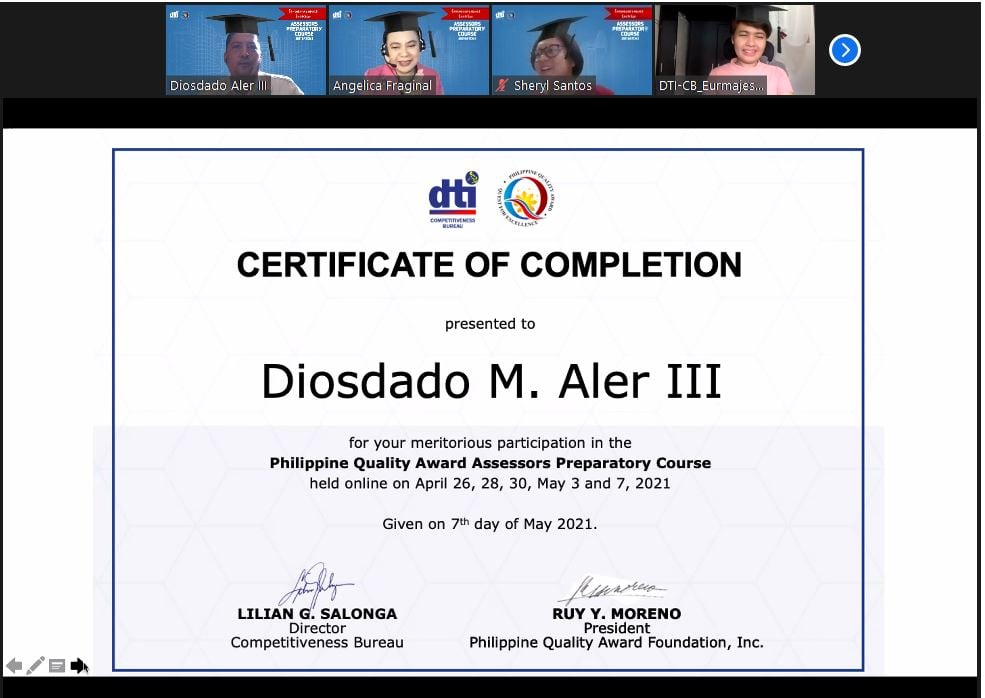
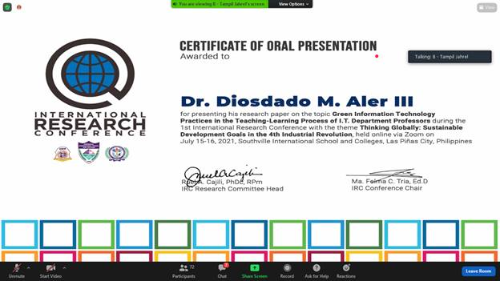

Awards:
- Certificate of Research Presentation

- Certificate of Completion (Philippine Quality Award Assessors Preparatory Course)

- Certificate of Oral Presentation

- Certificate of Completion (Reshaping the Global Landscape)

- Certificate research presentation

- Master in Information Technology

- Certificate of oral representation

- SacRED Legacy 2021 - St. Benedict's Service Awards

- Commencement Exercises 2018 - 1st as San Beda University, PICC May 29, 2018 with PRRD